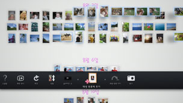

마음에 드는 사진으로 재생 목록 만들기
마음에 드는 사진을 모아 재생 목록을 만들 수 있습니다.
새 재생 목록 작성하기
1. |
라이브러리 영역에서 재생 목록에 넣을 사진을 선택하고  |
||||||||||||
|---|---|---|---|---|---|---|---|---|---|---|---|---|---|
2. |
재생 목록 영역의 빈 공간에서 |
||||||||||||
3. |
재생 목록을 설정합니다.
|
 (재생 목록에 추가)를 선택합니다.
(재생 목록에 추가)를 선택합니다.  버튼을 누릅니다.
버튼을 누릅니다.
 (음악)에서 선택합니다
(음악)에서 선택합니다알아두기
- 설정한 내용은 나중에
 (편집)에서 변경할 수 있습니다.
(편집)에서 변경할 수 있습니다. - 설정은 재생 목록별로 바꿀 수 있습니다.
재생 목록에 사진 추가하기
1. |
재생 목록에 추가할 사진을 선택한 후 |
|---|---|
2. |
작성한 재생 목록에서 |
재생 목록의 설정 편집하기
설정을 변경할 재생 목록을 선택하여  버튼을 누른 후 (편집)을 선택합니다.
버튼을 누른 후 (편집)을 선택합니다.
재생 목록의 장소 이동하기
재생 목록의 위치를 자유로이 바꿀 수 있습니다. 이동하고자 하는 재생 목록을 선택하여 버튼을 누른 후  (이동)을 선택합니다. 왼쪽 스틱으로 이동합니다.
(이동)을 선택합니다. 왼쪽 스틱으로 이동합니다.
알아두기
재생 목록을 선택한 후  버튼을 누른 상태에서 왼쪽 스틱으로 이동할 수도 있습니다.
버튼을 누른 상태에서 왼쪽 스틱으로 이동할 수도 있습니다.
재생 목록 삭제하기
삭제할 재생 목록을 선택한 후 버튼을 눌러  (삭제)를 선택합니다.
(삭제)를 선택합니다.